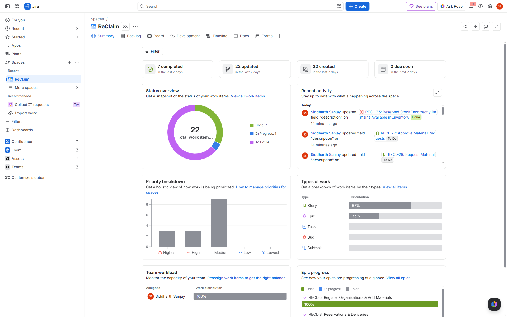
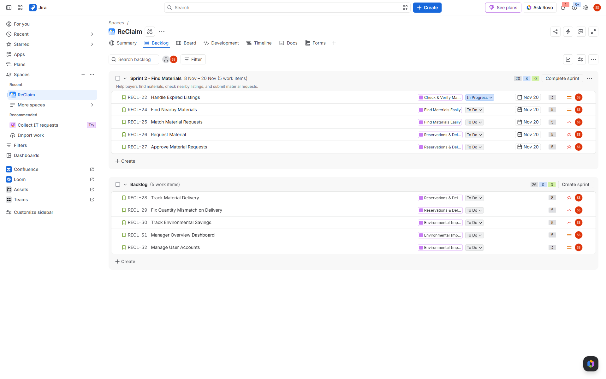
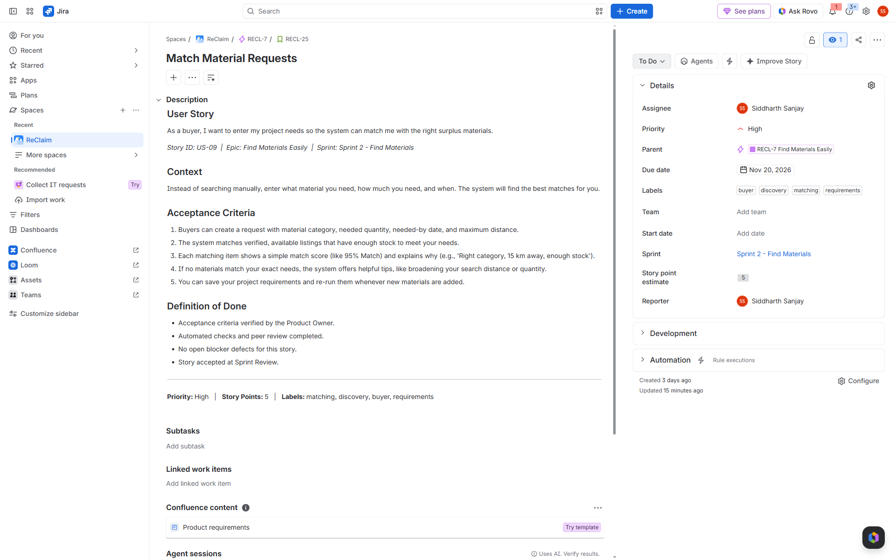
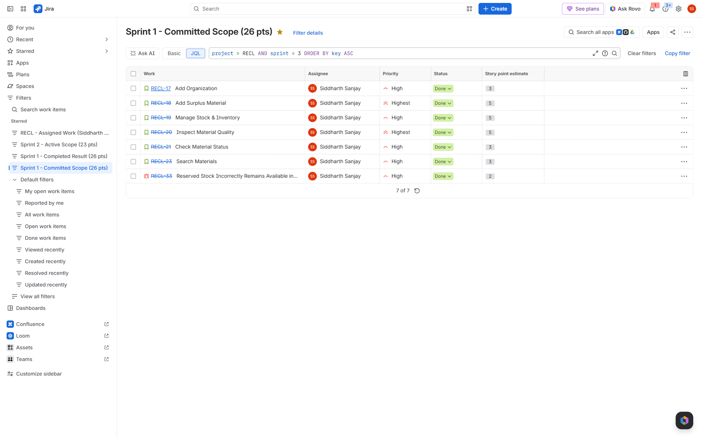
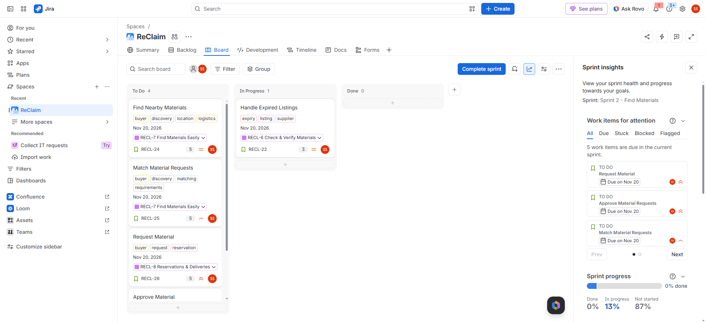
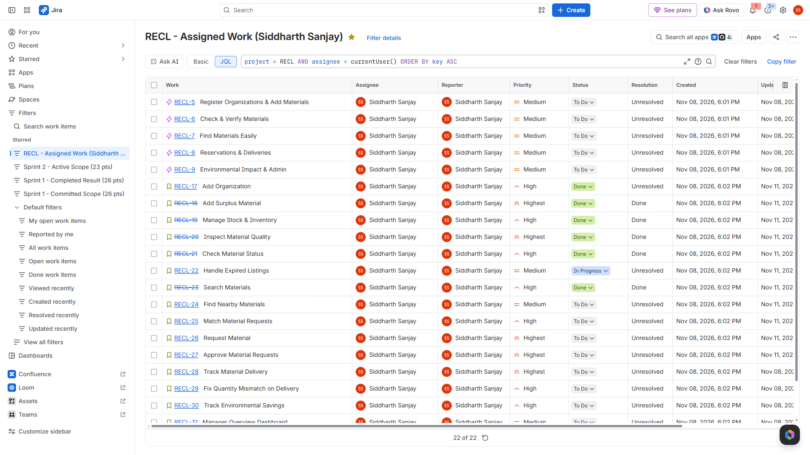
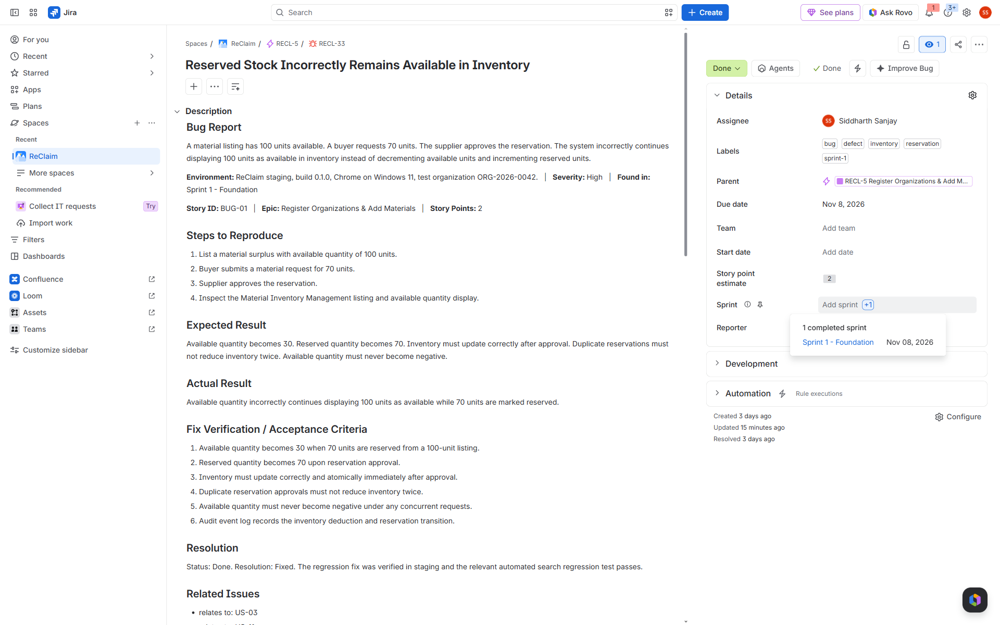
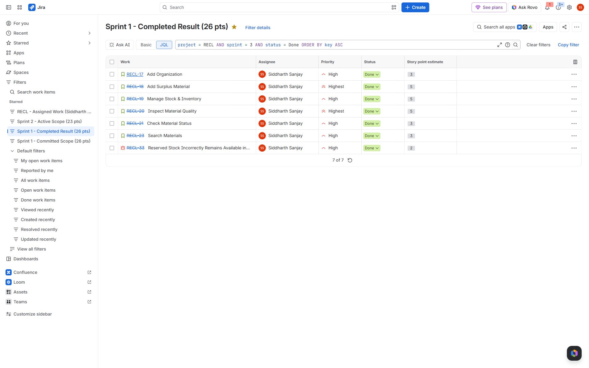
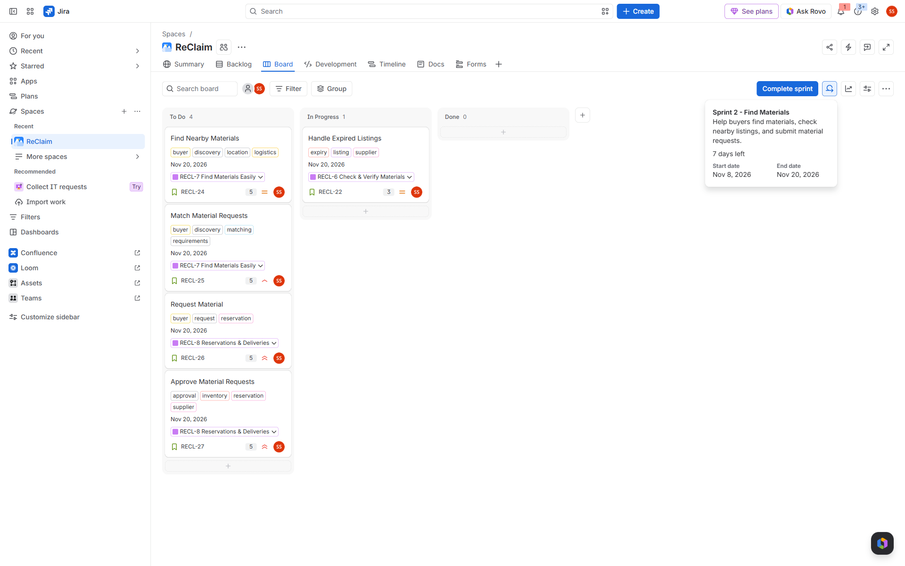
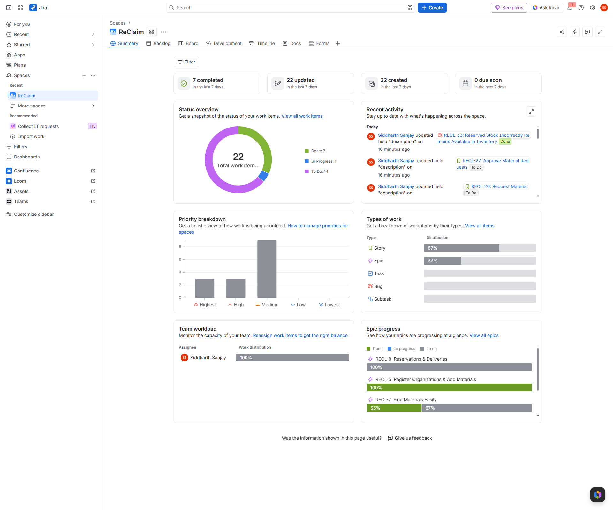

ReClaim is an industrial surplus intelligence and resource recovery platform that connects organizations holding unused building and manufacturing materials with organizations that can reuse them.
Unlike a generic classified ads board, ReClaim enforces a strict verification lifecycle: Register → Inspect → Verify → Discover → Request → Reserve → Transfer → Confirm Delivery → Calculate Impact.
| Requirement | Specification | Implementation Status |
|---|---|---|
| Scrum Project Creation | Jira Cloud team-managed Scrum project | VERIFIED IN JIRA (Key: RECL) |
| Product Backlog Size | Minimum 10 user stories | VERIFIED IN JIRA (16 Stories + 1 Defect = 75 pts) |
| Estimates & Priorities | Fibonacci story points & priorities on all items | VERIFIED IN JIRA (100% estimated & prioritized) |
| Acceptance Criteria | Numbered testable criteria + Definition of Done | VERIFIED IN JIRA (Complete on all 16 stories) |
| Sprint Planning | At least 2 Sprints planned | VERIFIED IN JIRA (Sprint 1: 26 pts, Sprint 2: 23 pts) |
| Task Execution & Workflow | To Do → In Progress → Done workflow | VERIFIED IN JIRA (Demonstrated on Scrum board) |
| Defect Tracking | Create and track at least 1 Bug to resolution | VERIFIED IN JIRA (RECL-33: Done, fix verified) |
| Sprint Completion | Complete Sprint 1 and record report | VERIFIED IN JIRA (Sprint 1 closed, 0 carry-over) |
| Sprint 2 Creation | Active Sprint 2 from remaining backlog | VERIFIED IN JIRA (Sprint 2 - Find Materials active) |
| Dashboard & Reports | Live project summary and reporting views | VERIFIED IN JIRA (project summary + saved-filter reports) |
| Screenshot Evidence | Minimum 8 unedited screenshots | VERIFIED IN JIRA (10 unedited captures) |
| Key | Type | Summary | Epic | Pts | Priority | Status | Sprint |
|---|---|---|---|---|---|---|---|
RECL-17 |
Story | Add Organization | RECL-5 | 3 | High | Done | Sprint 1 (Closed) |
RECL-18 |
Story | Add Surplus Material | RECL-5 | 5 | Highest | Done | Sprint 1 (Closed) |
RECL-19 |
Story | Manage Stock & Inventory | RECL-5 | 5 | High | Done | Sprint 1 (Closed) |
RECL-20 |
Story | Inspect Material Quality | RECL-6 | 5 | Highest | Done | Sprint 1 (Closed) |
RECL-21 |
Story | Check Material Status | RECL-6 | 3 | High | Done | Sprint 1 (Closed) |
RECL-23 |
Story | Search Materials | RECL-7 | 3 | High | Done | Sprint 1 (Closed) |
RECL-33 |
Bug | Reserved Stock Incorrectly Remains Available in Inventory | RECL-5 | 2 | High | Done (fix verified) | Sprint 1 (Closed) |
RECL-22 |
Story | Handle Expired Listings | RECL-6 | 3 | Medium | In Progress | Sprint 2 (Active) |
RECL-24 |
Story | Find Nearby Materials | RECL-7 | 5 | Medium | To Do | Sprint 2 (Active) |
RECL-25 |
Story | Match Material Requests | RECL-7 | 5 | High | To Do | Sprint 2 (Active) |
RECL-26 |
Story | Request Material | RECL-8 | 5 | Highest | To Do | Sprint 2 (Active) |
RECL-27 |
Story | Approve Material Requests | RECL-8 | 5 | Highest | To Do | Sprint 2 (Active) |
RECL-28 |
Story | Track Material Delivery | RECL-8 | 8 | Highest | To Do | Product Backlog |
RECL-29 |
Story | Fix Quantity Mismatch on Delivery | RECL-8 | 5 | High | To Do | Product Backlog |
RECL-30 |
Story | Track Environmental Savings | RECL-9 | 5 | High | To Do | Product Backlog |
RECL-31 |
Story | Manager Overview Dashboard | RECL-9 | 5 | Medium | To Do | Product Backlog |
RECL-32 |
Story | Manage User Accounts | RECL-9 | 3 | Medium | To Do | Product Backlog |
Committed: 26 story points across 6 user stories and defect RECL-33.
Completed: 26 story points (100% completion rate). All 7 issues moved to Done. Sprint closed with zero carry-over.
RECL-33: Reserved Stock Defect
Title: Reserved Stock Incorrectly Remains Available in Inventory
Scenario: 100 units available; buyer requests 70 units; supplier approves reservation. Inventory incorrectly continued displaying 100 units available.
Expected: Available stock becomes 30; Reserved stock becomes 70; inventory updates atomically.
Resolution: Done, with the fix verified. An atomic inventory decrement transaction was implemented, verified in staging, and linked to RECL-19 and RECL-27. Status: Done.
Planned: 23 story points across 5 user stories (RECL-22, RECL-24, RECL-25, RECL-26, RECL-27).
Current State: Active. Story RECL-22 is In Progress; 4 stories in To Do.

RECL, 22 work items, and the Done 7 / In Progress 1 / To Do 14 status split.








RECL-22 In Progress.
